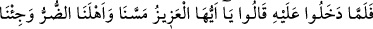
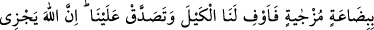
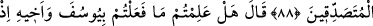
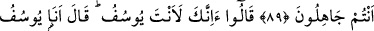
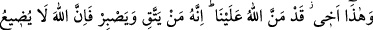
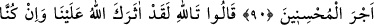
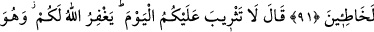
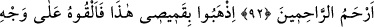
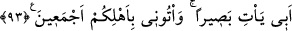

BUGÜN SİZE KINAMA YOK
88. (Yâkub’un oğulları tekrar Mısır’a) Yûsuf’un yanına döndüklerinde dediler
ki: “Ey Azîz! Bize ve ailemize darlık dokundu, değersiz de bir sermaye ile geldik.
Ama sen bizim için ölçeği tam yap, bize bağışta da bulun. Şüphesiz Allah sadaka
verenleri mükâfatlandırır.”
89. Yûsuf dedi ki: “Siz cahil iken Yûsuf’a ve kardeşine yaptıklarınızı biliyor
musunuz?”
90. Dediler ki: “Yoksa sen gerçekten Yûsuf musun?” O da: “(Evet) ben
Yûsuf’um, bu da kardeşimdir. Allah bize lütfetti. Doğrusu kim (Allah’tan) korkar
ve sabrederse, şüphesiz Allah güzel davrananların mükâfatını zâyi etmez!” dedi.
91. (Kardeşleri) dediler ki: Allah’a andolsun, hakikaten Allah seni bize üstün
kıldı. Gerçekten biz suç işlemiştik.” dediler.
92. (Yûsuf) dedi ki: “Bugün size kınama yok, Allah sizi bağışlasın. O,
merhametlilerin merhametlisidir.”
93. “Şu benim gömleğimi götürün, babamın yüzüne koyun da gözü açılsın. Bütün
âilenizle birlikte bana gelin.”
Yâkub’un oğulları tekrar Mısır’a “Yûsuf ’un yanına döndüklerinde”
Rivâyet edilir ki Yâkub (a.s.) oğullarından birine şunları yazmasını emretti:
“Rahmân ve Rahîm olan Allah’ın adıyla.
İbrahim Halîlullah oğlu İshak Zebîhullah oğlu Yâkub İsraîlullah’dan Mısır Azîzi’ne.
Biz, başlarına devamlı olarak belâlar gelen bir âileden geliyoruz. Dedem İbrahim,
Nemrud tarafından yakılmak istendi, fakat buna sabretti. Allah, ateşi kendisi için serin
ve selâmet kıldı.